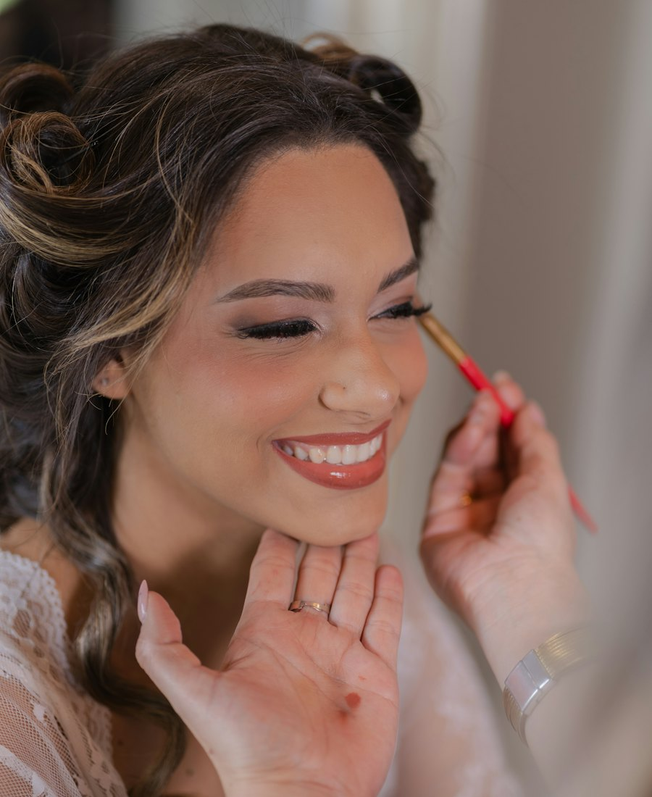
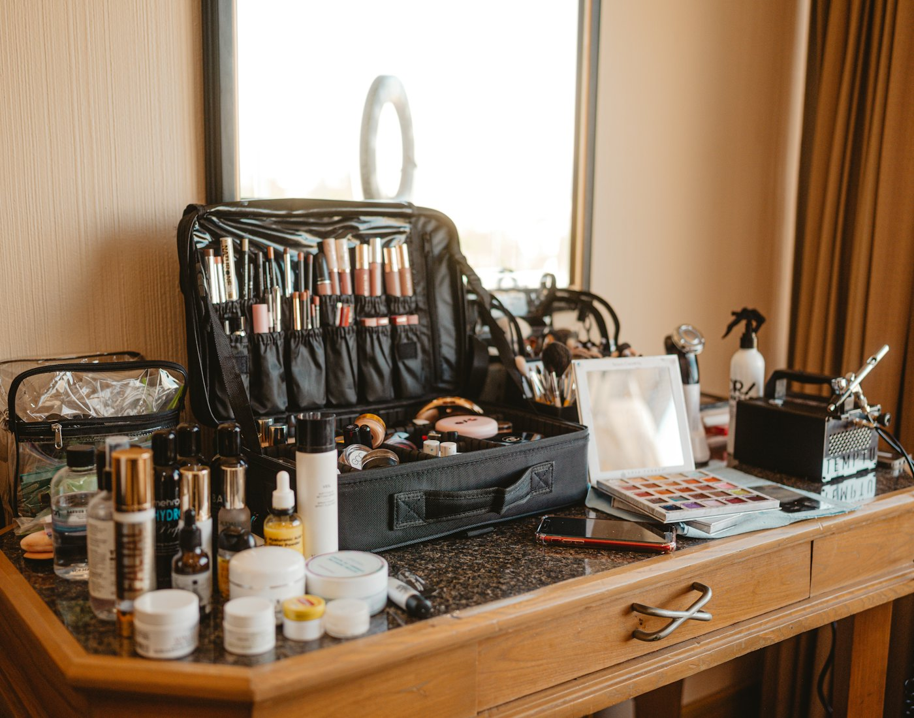
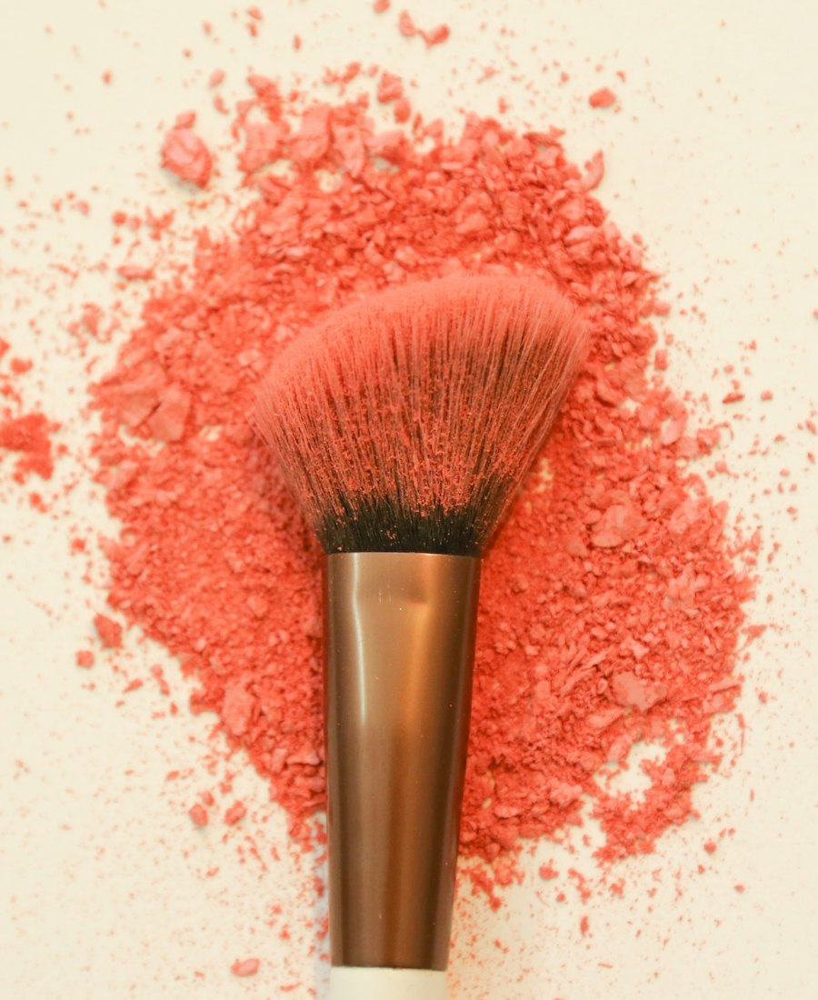
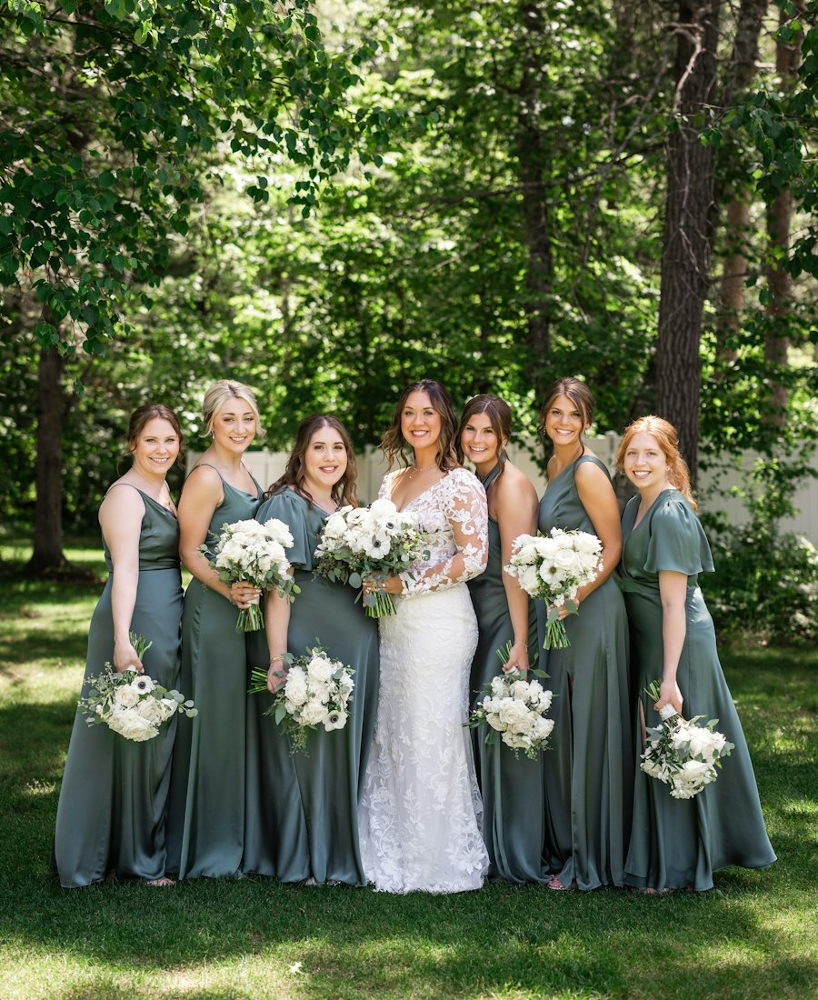
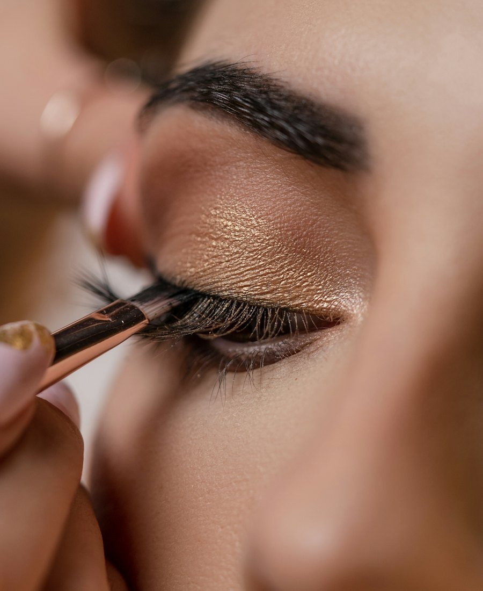
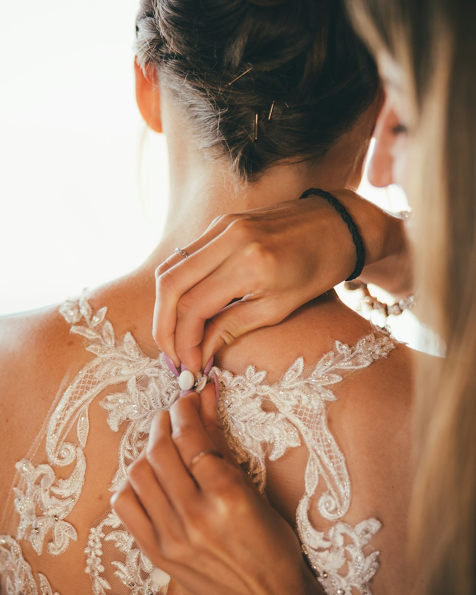

Maquiagem de noiva
Pele leve, olhar marcado e acabamento que aguenta beijo, choro e pista.
Quero sabermakeup social e de noivas
Maquiagem para noivas, madrinhas e festas, feita na sua casa, em Piracicaba.

No dia do casamento ou da festa, ninguém quer enfrentar trânsito e salão. A Dani atende em domicílio em Piracicaba: você se arruma no seu ritmo, perto de quem você gosta.
Texto de exemplo. No site final entra a apresentação da Dani com as palavras dela.
Toque no serviço e a conversa já abre no WhatsApp com o assunto escrito.

Pele leve, olhar marcado e acabamento que aguenta beijo, choro e pista.
Quero saber

Todo mundo pronto no mesmo lugar, com a maquiagem combinando com a festa.
Quero saber
Fotos ilustrativas. No site final entram as fotos dos trabalhos da Dani e a lista exata de serviços.

Quando a maquiadora vem até a casa, a manhã fica mais tranquila. Um roteiro comum:
Luz, cadeira e maleta perto da janela. Café pronto, música tocando.
Assim a noiva fica com a maquiagem mais fresca para as fotos.
Preparação de pele, olhos, cílios e boca, sem correria.
Últimos ajustes antes do vestido e um batom para levar na bolsa.
Roteiro de exemplo. No site final entram os horários e o jeito de trabalhar da Dani.
Toque numa foto para ampliar.
Fotos ilustrativas. No site final entram as noivas e clientes maquiadas pela Dani.
2.643 pessoas já acompanham os trabalhos da Dani no Instagram, com noivas e produções postadas em novembro de 2026.
@daniverissimomakeupA Dani vai até a casa da noiva, do hotel ou do local da festa. Mande o bairro e a data pelo WhatsApp para confirmar a disponibilidade.
Datas de casamento costumam ser reservadas com antecedência. Uma mensagem resolve.
Reservar minha data no WhatsApp